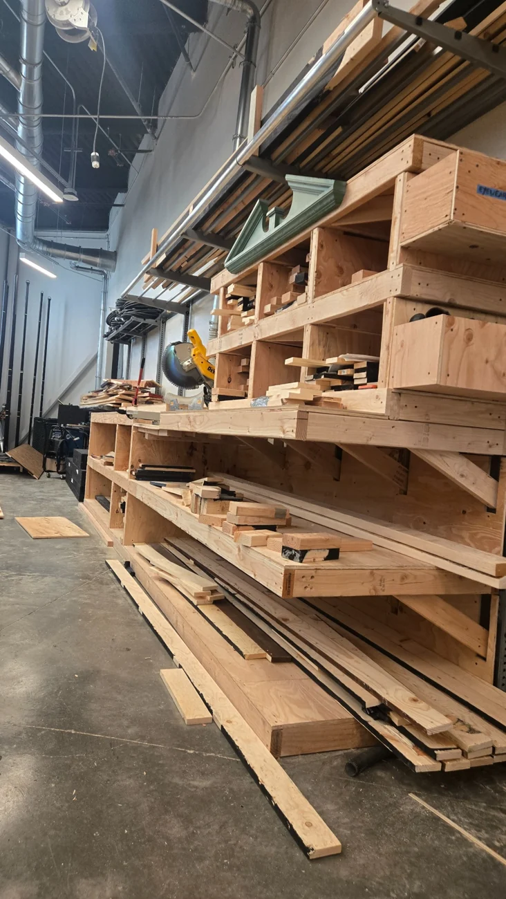
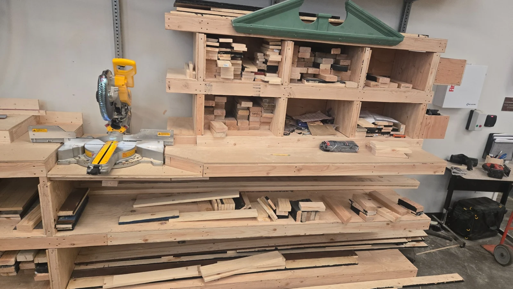

Scene Shop Fabrication
Practical shop improvements designed and built during employment at Colorado Mesa University.

PROJECT OVERVIEW
Built to make everyday shop work easier and safer.
01 / WORKSTATION
An 18-foot miter-saw station
Independently designed and built an 18-foot workstation with continuous workpiece support and integrated lumber storage. Designed around 16-foot-plus stock, stable cutting, and limited shop space.
Used shop saws, routers, measuring tools, and other fabrication equipment to make the structure practical for daily use.


02 / TEAM LEADERSHIP
Four mobile fabrication tables
Designed four mobile 4-by-8-foot worktables and organized coworkers into groups for legs, tops, shelves, casters, and assembly.
Provided tool instruction and help to newer coworkers while contributing directly to construction.


03 / BUILT RESULTS
Finished shop infrastructure
The finished workstation and mobile tables added durable work surfaces and material support for theater production work.

TAKEAWAY
Design is useful only when it works for the people using it.
Full workstation designed and built independently.
Four worktables designed and fabricated with coworkers under delegated tasks.